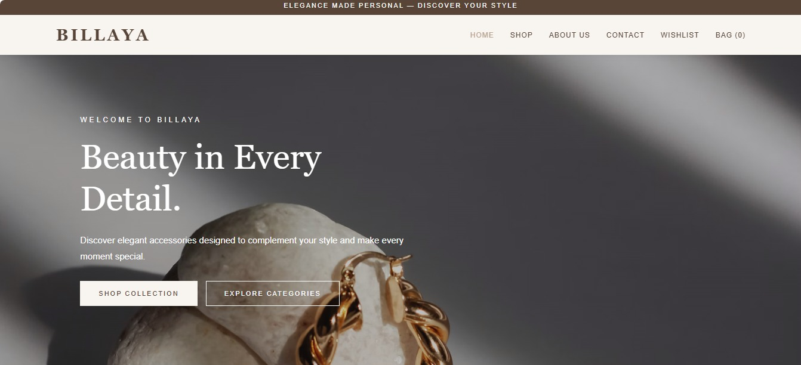
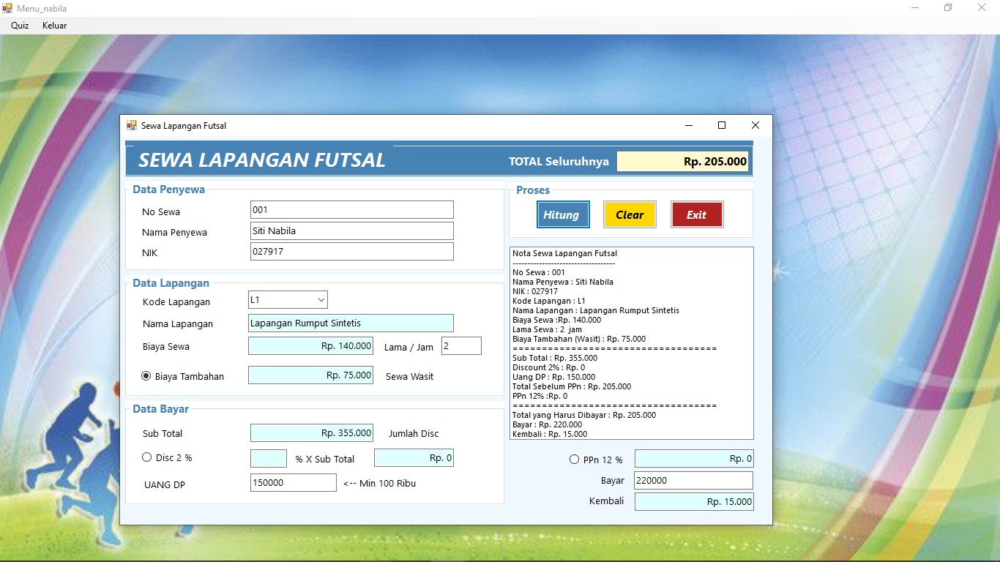
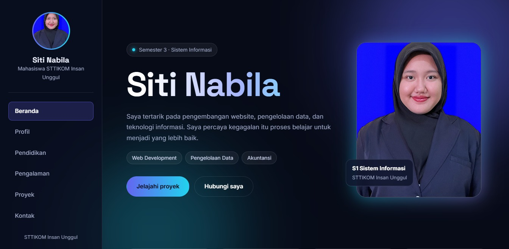

Website
BILLAYA Official Store
Website toko aksesoris wanita bergaya modern dan minimalis, dengan halaman produk dan interaksi sederhana.
HTMLCSSJavaScript
Kunjungi website →
Hasil pengerjaan yang saya buat sebagai bagian dari proses belajar web development dan pemrograman aplikasi.
Pilih kategori untuk menyaring proyek.

Website toko aksesoris wanita bergaya modern dan minimalis, dengan halaman produk dan interaksi sederhana.

Aplikasi sederhana untuk membantu penyewaan lapangan futsal, dibuat sebagai proyek pembelajaran pemrograman.

Website pribadi berisi profil, pendidikan, pengalaman, keahlian, dan proyek dalam beberapa halaman.
Tujuan dan hal yang saya pelajari dari tiap proyek.
Tertarik berdiskusi atau berkolaborasi?